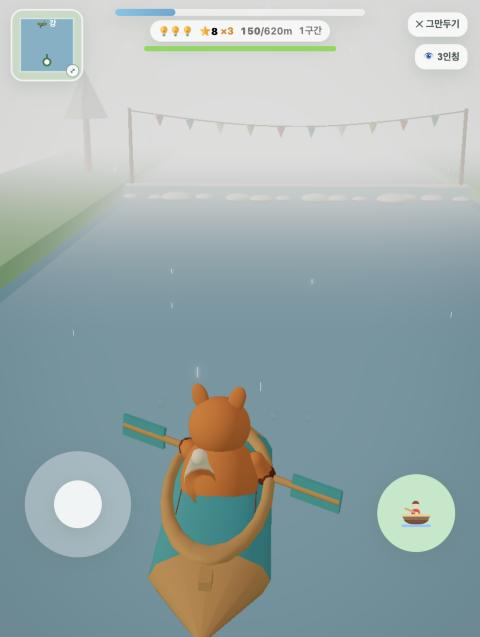
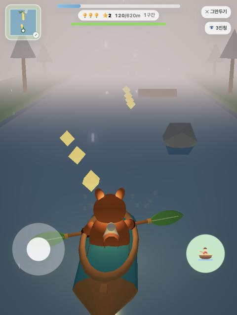
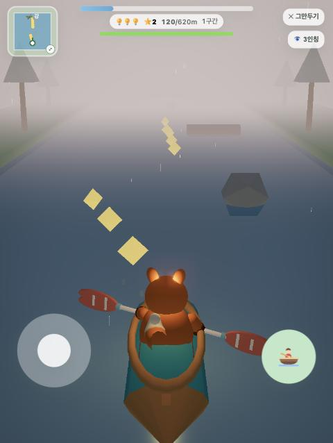

🛶 카약 노 디자인 시안
왼쪽: 가까이서 · 오른쪽: 실제 플레이 시점. 비 오는 저녁 조명이라 색이 실제보다 어둡게 나왔어요.

지금 · 기본 막대나무 막대 + 청록 네모 날. 밋밋해요.

1 · 나뭇잎 노연두 잎사귀 날 + 잎맥, 노란 끈 매듭, 하얀 손잡이 띠. 숲 마을 느낌.
2 · 물방울 클래식청록 물방울 날에 크림색 무늬, 금색 테, 빨간 손잡이. 배 색(청록·빨강)과 맞춤.

3 · 꽃잎 줄무늬산호색 꽃잎 날 + 흰 줄, 하늘·산호 줄무늬 손잡이, 가운데 별 장식.